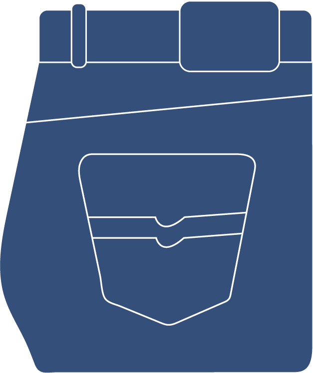

Wonder Wasteland
Hoe werkt het precies?
Op dit moment is het mogelijk om de volgende drie soorten materialen in te leveren:
Spijkerstof

Alle spijkerstoffen zijn welkom om in te leveren! Denk aan je oude jeans, denims, spijkerjassen, tassen, schoenen etc..
Kaarsvet
Heb je kaarsvet over? Gooi het dan niet weg! Maar lever het in bij Wonder Wasteland en die krijgt ook een nieuwe leven. nieuwe leven.
PP Plastic
Hierbij gaat het om plastic verpakking die gemaakt zijn van PP Polypropeen. Het is te herkennen aan het direhoekige recycle logo met het getal 5.
Nieuwe Leven
Je kunt je oude spullen inleveren bij:
The Upcycle Store,Sint Annendwarsstraat 13, Amsterdam
Uiteindelijk worden nieuwe producten gemaakt zoals nieuwe kaarsen, riemen, accessoires, tassen en meer!